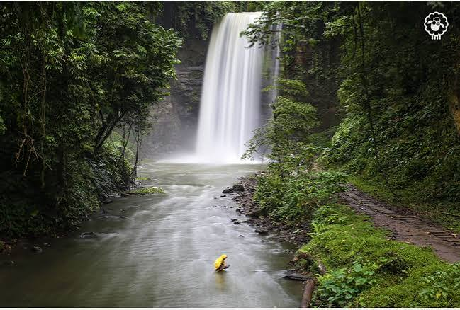

Tourist Spots

Lake Sebu
Lake Sebu is a beautiful lake surrounded by green mountains and forests. It is also known for its T'boli culture and relaxing natural scenery.
Location: Lake Sebu, South Cotabato

Seven Falls
The Seven Falls are a series of waterfalls surrounded by lush forests. Visitors can enjoy nature views and experience the famous zipline overlooking the waterfalls.
Location: Lake Sebu, South Cotabato

Asik-Asik Falls
Asik-Asik Falls is famous for water flowing directly from a green, plant-covered rock wall. Its unique appearance makes it one of the region's remarkable natural attractions.
Location: Alamada, Cotabato

Mount Matutum
Mount Matutum is a prominent volcanic mountain known for its cone-shaped peak and forest-covered slopes. It is a popular destination for nature lovers and mountain hikers.
Location: Tupi, South Cotabato

Kalon Barak Skyline Ridge
Kalon Barak Skyline Ridge offers scenic mountain views, rolling hills, and fresh countryside air. It is a peaceful destination for sightseeing and photography.
Location: Malungon, Sarangani

Sarangani Bay
Sarangani Bay is known for its beautiful coastal scenery and marine biodiversity. Visitors can enjoy beach activities, coastal views, and various water-based adventures.
Location: Sarangani Province and General Santos City